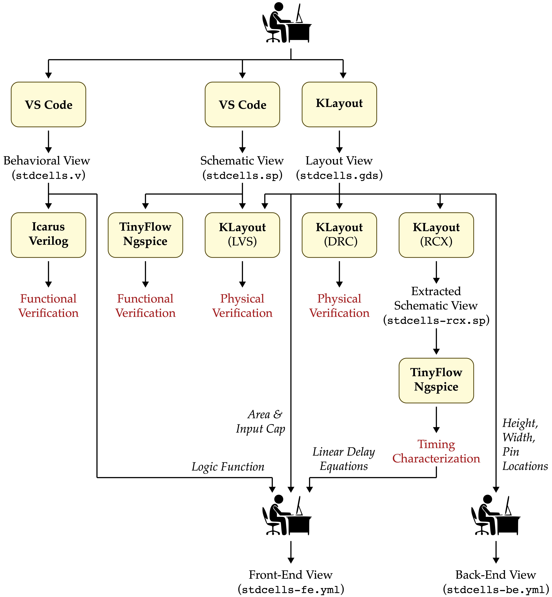
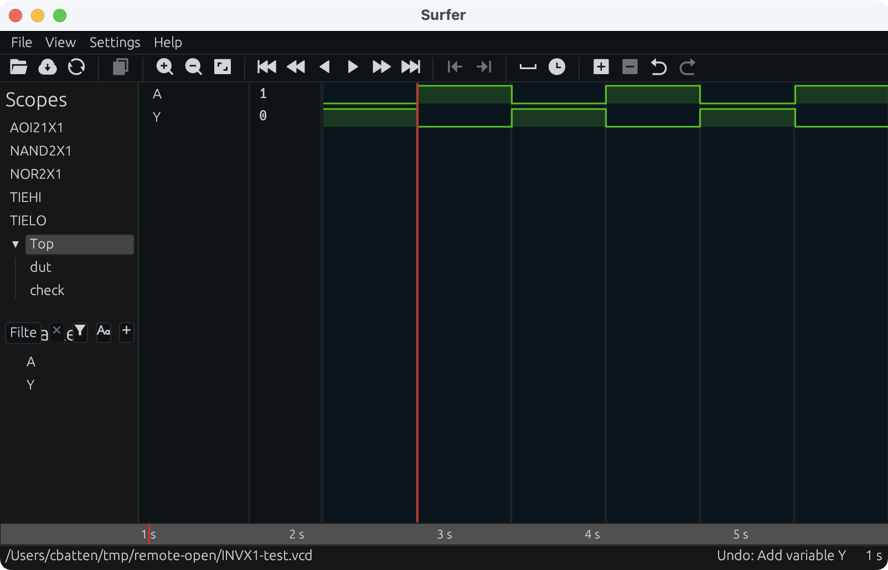
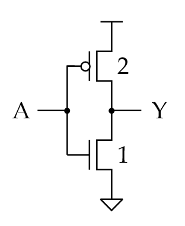
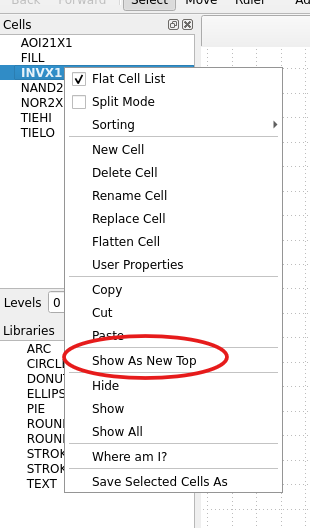
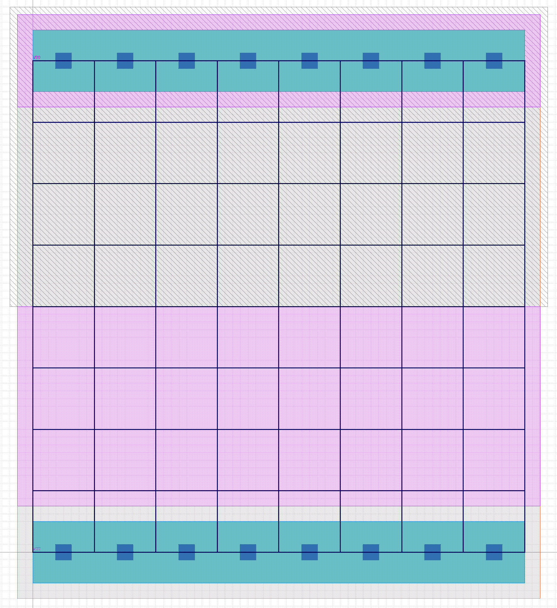
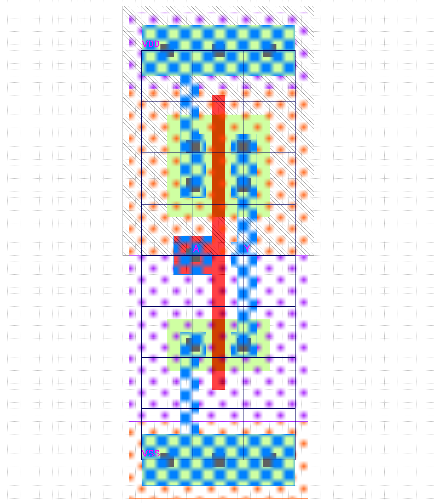
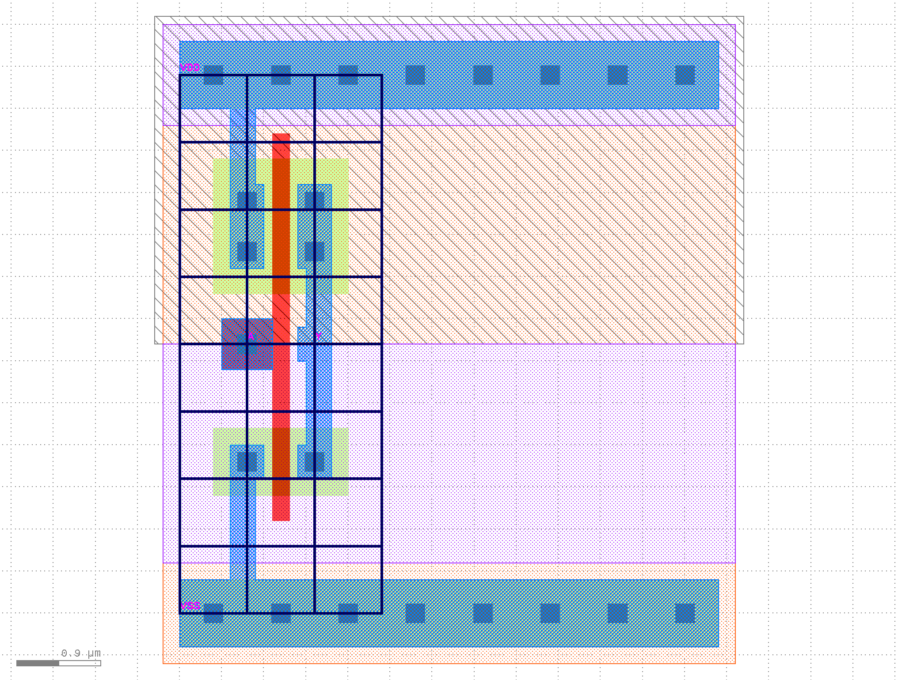
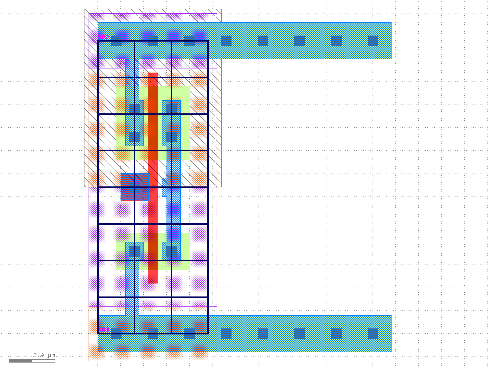
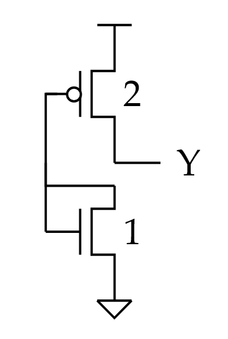
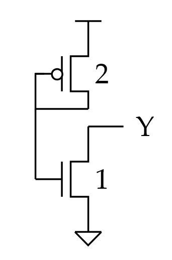

ECE 6745 Lab 2: Standard-Cell Inverter
In this lab, we will implement a standard-cell inverter including the corresponding behavioral, schematic, layout, extracted schematic, front-end, and back-end views.
-
Behavioral View: Logical function of the standard cell, used for gate-level simulation
-
Schematic View: Transistor-level representation of standard cell, used for functional verification and layout-vs-schematic
-
Layout View: Layout of standard cell, used for design-rule checking (DRC), layout-vs-schematic (LVS), resistance/capacitance extraction (RCX), and fabrication
-
Extracted Schematic View: Transistor-level representation with extracted resistance and capacitances, used for layout-vs-schematic (LVS) and timing characterization
-
Front-End View: High-level information about standard cell including area, input capacitance, logical function, and delay model; used in synthesis
-
Back-End View: Low-level information about standard cell including height, width, and pin locations; used in placement and routing
We will be using the following TinyFlow standard-cell design flow.

We will by begin by writing the behavioral view in Verilog and verifying its functionality using a Verilog test bench and Icarus Verilog. We will then write the schematic view in SPICE and verify its functionality using a SPICE test bench and TinyFlow-Ngspice. Instead of using Ngspice directly as in Lab 1, we will now be using our TinyFlow-Ngspice wrapper script which makes it much easier to run SPICE simulatoins. We will then use the KLayout design editor to create the layout, perform a design-rules check (DRC), perform a layout vs. schematic check (LVS), and generate an extracted schematic. We will re-simulate the extracted transistor-level schematic using TinyFlow-Ngspice to characterize the propagation delay for different load capacitances in order to create a linear delay model. Finally, we will write the front-end and back-end views for our standard-cell inverter in two YAML files. We will also implement three auxillary standard cells (i.e., TIEHI, TIELO, FILL).
1. Logging Into ecelinux
Follow the same process as previous labs Find a free workstation Find a free workstation and log into the workstation using your NetID and standard NetID password. Then complete the following steps. These are the same stes as in the first lab with one exception. We are now installing the VS Code Surfer extension to be able to view waveforms.
- Start VS Code
- Install the Remote-SSH extension and the Surfer extension
- Use View > Command Palette to execute Remote-SSH: Connect Current Window to Host...
- Enter netid@ecelinux-XX.ece.cornell.edu where XX is an ecelinux server number
- Use View > Explorer to open your home directory on ecelinux
- Use View > Terminal to open a terminal on ecelinux
- Start MS Remote Desktop

Now use the following commands to clone the repo we will be using for today's lab.
% source setup-ece6745.sh
% source setup-gui.sh
% xclock &
% mkdir -p ${HOME}/ece6745
% cd ${HOME}/ece6745
% git clone git@github.com:cornell-ece6745/ece6745-lab2 lab2
% cd lab2
% tree
Your repo contains the following files for the views and simulation scripts for each standard cell.
.
└── stdcells
├── verilog-test
│ ├── AOI21X1-test.v
│ ├── INVX1-test.v
│ ├── NAND2X1-test.v
│ ├── NOR2X1-test.v
│ ├── TIEHI-test.v
│ └── TIELO-test.v
├── stdcells-be.yml
├── stdcells-fe.yml
├── stdcells-rcx.yml
├── stdcells.gds
├── stdcells.sp
└── stdcells.v
To make it easier to cut-and-paste commands from this handout onto the
command line, you can tell Bash to ignore the % character using the
following command:
Now you can cut-and-paste a sequence of commands from this tutorial
document and Bash will not get confused by the % character which begins
each line.
2. Standard-Cell Inverter
In this part, we will be implementing the six views for the standard-cell inverter. Remember that in addition to being DRC and LVS clean, your inverter must also follow all of the rules which make standard cells "standard":
- Standard transistor positions and orientation (PMOS at top, NMOS at bottom, vertical gates)
- Standard n-well size and location (n-well at top)
- Standard VDD and ground metal layer and locations (on metal 1, VDD rail 8 lambda tall at top, ground rail 8 lambda tall at bottom)
- Standard n-well and substrate contacts
- Standard boundry and extension of n-well, VDD, and ground rails beyond boundry (origin is in lower left)
- Standard metal 2+ routing grid (8 lambda track spacing)
- Standard cell height (64 lambda)
- Standard cell width (aligned to routing grid, i.e., 8 lambda, 16 lambda, 24 lambda, etc)
- Standard routing (all routing must be on polysilicon or metal 1)
- Standard pin layer and locations (on "metal1 label" layer and on routing grid)
- Standard set of available drive strengths with equal rise and fall times
To get started, create a build directory which will use for all of our simulations.
2.1. Behavioral View
We will begin by defining our inverter standard cell in a behavioral way,
in other words, what is its *logical functionality? To do this, we use
Verilog by writing a module definition for our cell in stdcells.v and
testing the standard cell module with a Verilog testbench (provided in
stdcells/verilog-test/INVX1-test.v). Use VS Code to implement the
behavioral view for our INVX1 standard cell.
Use standard Verilog bitwise operations to assign the output Y as a function of the inputs. Next, we will test the inverter using the provided test bench.
% cd ${HOME}/ece6745/lab2/stdcells/build
% iverilog -Wall -g2012 -I .. -o INVX1-test ../verilog-test/INVX1-test.v
% ./INVX1-test
The test bench will display a single check for A=0. Open the test bench and add additional checks like this:
// A Y
check( 1'b0, 1'b1 );
check( 1'b1, 1'b0 );
check( 1'b0, 1'b1 );
check( 1'b1, 1'b0 );
check( 1'b0, 1'b1 );
check( 1'b1, 1'b0 );
Now rerun the Verilog test bench to verify the functionality of your standard cell behavioral view for all possible inputs.
% cd ${HOME}/ece6745/lab2/stdcells/build
% iverilog -Wall -g2012 -I .. -o INVX1-test ../verilog-test/INVX1-test.v
% ./INVX1-test
The output should look like this:
You can also view the waveforms from this simulation by using Surfer.
You can then click the dropdown arrow next to TOP in the top-left Scopes panel. Then click on A and B in the Variables panel to display the corresponding waveforms. Verify the output for your inverter matches your expectations for its logical functionality before moving on.

2.2. Schematic View
Now that your Verilog behavioral/logical view for your inverter is ready
and fully tested, we also need to define its schematic view as a SPICE
file in stdcells.sp. This is the schematic for an INVX1 standard cell
with equal rise and fall times:

Use VS Code to implement the schematic view for our INVX1 standard cell.
Recall from from lab 1 the SPICE syntax is as follows:
- PMOS:
M_P <D> <G> <S> <B> PMOS L=<length>U W=<width>U - NMOS:
M_N <D> <G> <S> <B> NMOS L=<length>U W=<width>U
Remember that you are now implementing a 2:1 inverter for equal rise and fall times instead of a 1:1 inverter. Make sure you size the width of the transistors correctly!
Once you have a completed the schematic view, you will now simulate it
with TinyFlow-Ngspice. The following shows the syntax of how to use the
new tinyflow-ngspice wrapper script.
Let's break down each input (all four are required):
-
--spice=<SPICE_FILE>: replace<SPICE_FILE>with the path tostdcells.spwhere you have defined your SPICE schematic (e.g.,../stdcells.sp) -
--cell=<CELLNAME>: replace<CELLNAME>with the name of your cell to test (e.g.,INVX1) -
--cload=<CLOAD>: replace<CLOAD>with the capacitance to put on the output pin of your cell, you can use regular integers followed by a unit suffix (e.g.,10ffor 10 femtofarads) -
--inputs=<INPUTS_SPEC>: replace<INPUTS_SPEC>with a string surrounded by quotes of the following form:<PIN1>:<VAL0>-<VAL1>...<VALN>;<PIN2>:<VAL0>-<VAL1>...<VALN>where<PINN>specifies one of the input pins for your cell (e.g. A, B, etc.), and<VALN>specifies a 0 or 1 to assert on that input pin. Each of these values are separated by a dash (-), such that each input value will be set for one timestep (2ns) before the next value is set. All input pins and their corresponding values are separated by a semicolon (;), and input pin names are separated from their values list by a colon (:). All input pins as specified by your standard cell must be present, and they must all have the same number of transitions.
Use TinyFlow-Ngspice to simulate the INVX1 standard cell with a 50fF load and an input going from 0 to 1 to 0:
% cd ${HOME}/ece6745/lab2/stdcells/build
% tinyflow-ngspice --spice=../stdcells.sp --cell=INVX1 --cload=50f \
--inputs="A:0-1-0"
The command will take care of all of the manual steps you had to do in lab 1 for you:
- converting your Spice schematic to a Sky130-compatible version,
- setting up the Spice testbench,
- running the testbench,
- generating a waveform plot, and
- analyzing the propagation delays.
When the command has completed, you will see an output to the console
specifying the transitions of both the input and output pins of your
standard cell throughout the simulation. It will also print rising and
falling delays if captured from each input pin to the output; this will
be discussed later when characterizing the cell. Additionally, your build
directory will contain a new subdirectory ngspice-results/ with more
subdirectories within it named with a concatenation of the inputs you
specified. Each of these subdirectories will contain the following:
-tb.sp: the Spice testbench used to simulate your schematic.csv: CSV data generated by Ngspice for each pin of your standard cell.png: an image plotting the voltage of each pin of your standard cell over time.txt: a text file containing the same output as what was printed to the console
Look at the results and verify functionality of the schematic view for your INVX1 standard cell. Look at the text output and the waveform plot.
% cd ${HOME}/ece6745/lab2/stdcells/build
% code ngspice-results/INVX1-50f-stdcells-A_0_1_0/INVX1-50f-stdcells-A_0_1_0.png
2.3. Layout View
We can now move on to drawing the layout view for our INVX1 standard
cell. Use Klayout to open the stdcells.gds file:
Make sure the inverter is your top cell view by clicking on INVX1 in the Cells panel and selecting "Show As New Top":

You should see a template for a standard-cell layout as shown below:

Because we want all our standard cells to follow out standard parameters as discussed in lecture, we have provided you with this template for every standard cell to get started. Notice how the height of the cell (from center of contact on bottom VSS rail to center of contact on top VDD rail) is 64 lambda (8 vertical routing tracks, each track is 8 lambda tall). The width of this standard cell is also 64 lambda (8 horizontal tracks, each of 8 lambda wide). You will also see some familiar layers here, particularly the nwell under the top half of the standard cell. You will also notice that we have already inserted pselect and nselect regions accordingly.
To implement the inverter, you will follow the reference layout below (notice how the pins must be on the intersecting black track lines in the layout):

Be sure to reference the TinyFlow 180nm Design-Rule Manual (DRM) when drawing your layout:
Notice how this inverter only needs to be 24 lambda wide (3 horizontal tracks), but the standard cell we have given you is 64 lambda wide (8 horizontal tracks). When drawing your layout, implement the above inverter all the way on the left side of your provided template. You will then need to "trim" the template from the right side by performing the following actions to achieve a minimum-width.
Use the Erase tool to erase extra htrack and vtrack shapes, then use the Erase or Partial tool to move the right-hand edge of the prboundary so that it is aligned with the new right most track.

Use the Erase or Partial tool to move the right-hand edge of the nwell so that it extends beyond the prboundary by 3 lambda (symmetrical with the left edge of the cell)

Use the Erase or Partial tool to move the nselect and pselect boxes so that they extend beyond the prboundary by 2 lambda (symmetrical with the left edge of the cell).

Finally, use the Erase or Partial tool to adjust the well-tap structures (active + metal1 + contacts) at the top and bottom of the cell so that it is aligned with the prboundary.

As in lab 1, be sure to run DRC and LVS to ensure your design adheres to all design rules and matches your SPICE schematic. Use the 2.5D tool to visualize your standard cell in 3D!
2.4. Extracted Schematic View
Now that we have a DRC and LVS-clean layout, we can perform functional verification as well as characterization on our extracted schematic view.
LVS dumps out your extracted schematic view in SPICE format for you
automatically. You should see the file in stdcells/invx1-rcx.sp. Copy
the contents of this file and paste it into stdcells/stdcells-rcx.sp.
Delete stdcells/invx1-rcx.sp since it is no longer needed.
We will now run functional simulation on the extracted schematic view. Notice the only difference for this command from functionally verifying the schematic view is the different Spice file.
% cd ${HOME}/ece6745/lab2/stdcells/build
% tinyflow-ngspice --spice=../stdcells-rcx.sp --cell=INVX1 \
--inputs="A:0-1-0"
Compare the output waveforms from the console/txt file and png file to your expectations for what the functionality of the inverter should be. Only move on once your expectations are met (go back to fix your layout if the waveforms do not look correct).
We will now perform timing characterization on the inverter. This means
we are going to run multiple SPICE simulations to create a linear-delay
model which we can then use in the standard cell front-end view. Our
linear-delay model should represent the worst case propagation delay
through the inverter (either rising input to falling output or falling
output to rising input) as a function of its load capacitance (cload). To
do this, focus on a single transition at a time. Then choose three values
of cload and observe the values in the Measured delays: section of
the TinyFlow-Ngspice output. t_pdf represents the falling propagation
delay, while t_pdr represents the rising propagation delay. So here is
how we would gather propagation delays at three load capacitances for the
output falling transition.
% cd ${HOME}/ece6745/lab2/stdcells/build
% tinyflow-ngspice --spice=../stdcells-rcx.sp --cell=INVX1 --cload=10f \
--inputs="A:0-1"
% tinyflow-ngspice --spice=../stdcells-rcx.sp --cell=INVX1 --cload=20f \
--inputs="A:0-1"
% tinyflow-ngspice --spice=../stdcells-rcx.sp --cell=INVX1 --cload=30f \
--inputs="A:0-1"
Remember, only analyze a single transition at a time. Once you have obtained a propagatoin delays for at least three load capacitances, converted the delay to ps and the load value to fF. Then generate a linear regression of the data with delay on the y-axis and load value on the x-axis using your favorite data analyzer (Google Sheets, TI calculator, etc.). Note down the y-intercept and slope. As discussed in lecture, the y-intercept represents the parasitic delay, or the delay when the cell is unloaded, while the slope represents the load-delay factor, a measure of how much the delay increases for increasing load capacitance. These values are necessary for static-timing analysis which will be performed in later labs.
Once you have determined a linear for both transitions look at these equations and choose the worst case linear delay equation to use as the delay model for your front-end view.
Critical Thinking Questions
Go back and compare the rising and falling propagation delays of your pre-extracted SPICE schematic to your extracted SPICE schematic. Are the delays larger or smaller for the extracted schematic compared to the pre-extracted schematic? Why is this the case?
2.5. Front-End View
We are now ready to create a YAML file for the front-end ASIC flow that
we will be working on in later labs. This YAML file will use much of the
information we have obtained in previous steps, and combine it together
for the front-end tools to use. This view primarily contains timing,
logical, and basic area information for each cell. Use VS Code to open
the stdcells-fe.yml file.
We give you the following template for the front-end view for your INVX1 standard cell.
- name: INVX1
area_cost: 0 # lambda^2
pins:
- name: A
type: input
cgate: 0 # fF
- name: Y
type: output
function: # tree of generic gates
parasitic_delay: 0 # ps
load_delay_factor: 0 # ps/fF
patterns:
- # list of equivalent trees of generic NAND and INV gates
Fill in the area_cost value as the area of the standard cell in
lambda-squared, starting from the bottom-left corner of the intersecting
black lines indicating the horizontal and vertical tracks, and ending at
the top-right corner at the intersection of the black lines for the
horizontal and vertical tracks (see the red circles in the below image):

Each cell also has pin information under the "pin" key. The pin information itself will be a list of data for each input and output pin, where each pin has a name and type (input or output).
For input pins, you will need to specify a value for the gate capacitance
(cgate) in fF associated with that pin. The calculation for gate
capacitance is as follows:
The value of 1.60 fF/um is a reasonable value for a generic 180nm process. You need to convert it to just units of fF by multiplying by the total gate width in um associated with the given input pin. You will need to find this total gate width in units of lambda by looking at your layout and comparing against your SPICE schematic. The multiplication by 0.09 is to convert lambda to microns.
For output pins, you will need to specify the function which determines the logical functionality of this pin as a function of the input pins. You can specify it using a tree of generic gates. Here is a list of the valid generic gates:
BUF,NOT,INVAND2,OR2,XOR2NAND2,NOR2,XNOR2
So for example, here is an example tree for a more complicated
three-input standard cell: NAND2( INV(A), OR2(INV(B),C) ).
You will need to fill in your values for load_delay_factor and
parasitic_delay as calculated in the previous step. Note that
load_delay_factor MUST be in units of ps/fF, and parasitic_delay MUST
be in units of ps. Go back and double check you performed the conversions
if necessary.
Finally, you will need to specify a list of patterns using only INV() and NAND2() logical gates that matches the functionality of your gate for all of its inputs. The reason for doing this will become clear as we discuss synthesis algorithms in lecture, as is needed when mapping your high-level Verilog code to these standard-cells.
2.6. Back-End View
We are now ready to create a YAML file for the back-end ASIC flow that we
will be working on in later labs. Again, this file contains much of the
information that we have previously found, and bundles it for use by the
ASIC flow. This file primarily contains physical data for each cell
including width, height, and pin locations. Use VS Code to open
the stdcells-fe.yml file.
You will first see a dictionary whose toplevel key is "layers". DO NOT MODIFY ANYTHING IN THIS DICTIONARY! It contains all the relevant information needed by the flow tools to properly route your design. Feel free to look through it to understand what information it contains.
After the layer information, you will see a dictionary whose toplevel key is "sites". DO NOT MODIFY ANYTHING IN THIS DICTIONARY! It contains information for the standard-cell placement on a grid of sites. One site is defined as a 1-track wide "slice" of a standard-cell row. For instance, the FILL standard cell you will create only occupies one site, while the INVX1 standard cell occupies three sites. This unit standardizes the available widths for standard cells so that placement algorithms have an easier time placing the cells.
Finally, we have the "cells" dictionary, where you will add in the physical information for each standard cell. Each cell is a list item as in the front-end with its name.
We give you the following template for the back-end view for your INVX1 standard cell.
- name: INVX1
size:
width: 0 # lambda
height: 0 # lambda
pins:
- name: A
loc: (0,0) # (x,y) lambda
- name: Y
loc: (0,0) # (x,y) lambda
Each cell has a "size" sub-dictionary, with keys for width and height. Fill these values in using the same lower-left and upper-right track intersection points used for calculating area in the front-end YAML. These width and height values should therefore be in units of lambda. Next is the pin list, similar again to the front-end view. In this file, each pin once again has a name, but also an X and Y location. Look at your layout, and get the X and Y location of the pin marker for each pin relative to the lower-left track intersection. These values should once again be in units of lambda.
3. Standard-Cell TIEHI
To implement the TIEHI cell, you will follow the schematic and layout reference below (notice how the pins must be on the intersecting black track lines in the layout):


Create the required standard cell views:
- Behavioral View (this will be very simple, run Verilog simulation)
- Schematic View (run TinyFlow-Ngspice simulation)
- Layout View
- Extracted Schematic View (run TinyFlow-Ngspice simulation for functional verification)
- Front-end view
- Back-end view
Note that your schematic view might need a temporary internal wire/net.
To create a temporary internal wire/net simply use a new name like
net1; SPICE will assume this implicitly refers to a new temporary
internal wire/net.
4. Standard-Cell TIELO
To implement the TIELO cell, you will follow the schematic and layout reference below (notice how the pins must be on the intersecting black track lines in the layout):


Create the required standard cell views:
- Behavioral View (this will be very simple, run Verilog simulation)
- Schematic View (run TinyFlow-Ngspice simulation)
- Layout View
- Extracted Schematic View (run TinyFlow-Ngspice simulation for functional verification)
- Front-end view
- Back-end view
Note that your schematic view might need a temporary internal wire/net.
To create a temporary internal wire/net simply use a new name like
net1; SPICE will assume this implicitly refers to a new temporary
internal wire/net.
5. Standard-Cell FILL
To implement the FILL cell, you will follow the layout reference below (notice how there are no pins other than VDD and VSS which are on the template already):

Create the required standard cell views:
- Behavioral View (this will be very simple, no simulation)
- No Schematic View
- Layout View
- No Extracted Schematic View
- Front-end view (only need area cost)
- Back-end view (only need width and heigh)
6. Batch-DRC and LVS
Performing DRC and LVS manually on each and every cell is tedious. To help you ensure all your cells are passing DRC/LVS, we have created batch scripts that will perform DRC and LVS on every cell for you. To run them, run the following commands after completing your standard cells:
These two scripts will alert you if there are any DRC/LVS errors in any
of your cells, all without needing to open the KLayout GUI. Output files
from these scripts will be generated to drc_results, lvs_results, and
rcx-results subdirectories within the build directory.